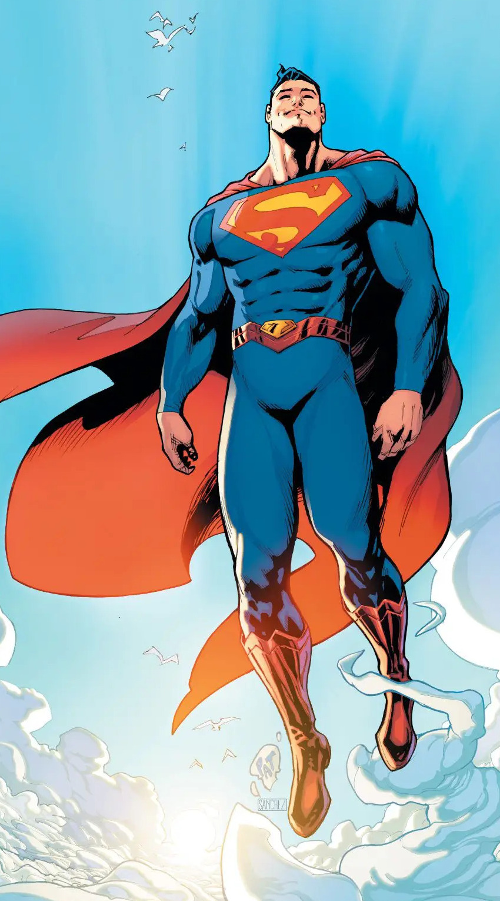

Esta página funcionará como portal de información sobre los superhéroes más importantes del universo DC (con intención de ampliarlo también al universo Marvel) y demás personajes relevantes relacionados con ellos. En un principio se empezará con la Batfamilia y la Liga de la Justicia. Gracias por su atención, esperamos que les guste y agradecemos su colaboración.
